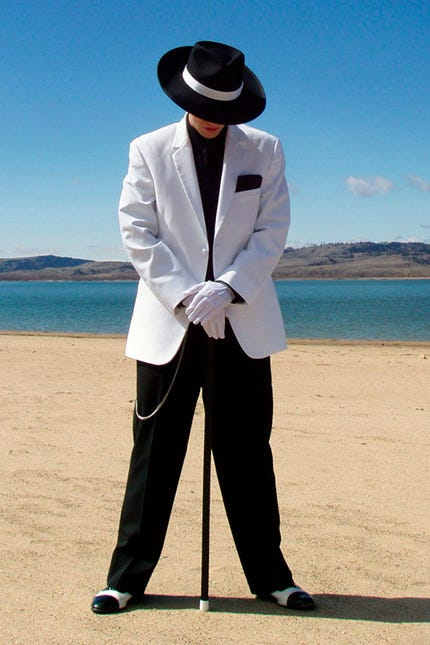
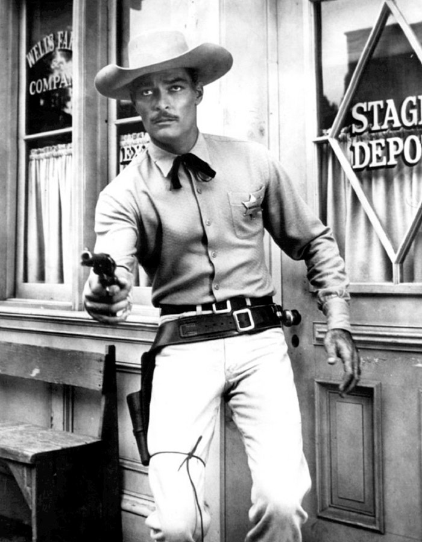
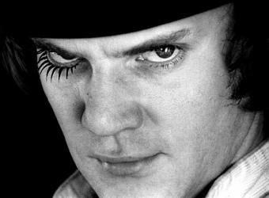
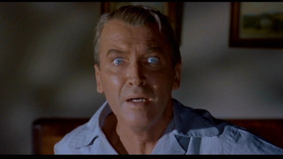
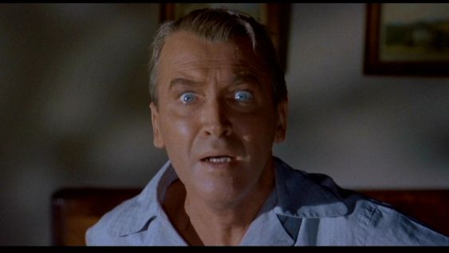
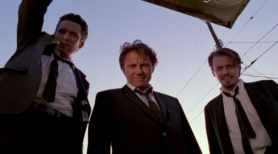
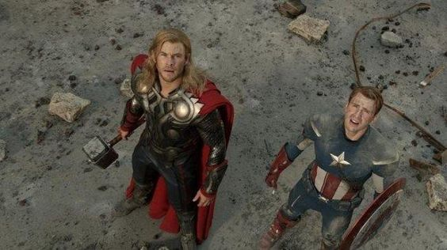

Plano General
Muestra un amplio contexto de la escena, capturando todo el entorno y los sujetos.
Muestra un amplio contexto de la escena, capturando todo el entorno y los sujetos.
Muestra al sujeto completo, desde la cabeza hasta los pies, con un enfoque en su figura y contexto. Es ideal para capturar a una persona en su totalidad, resaltando su postura y gestos corporales.

Enfoca la atención en los sujetos principales, mostrando una parte significativa de su cuerpo.
Se enfoca principalmente en los sujetos desde la cintura hacia arriba, creando un efecto íntimo.

Se acerca al sujeto de manera muy cercana, capturando detalles específicos o expresiones faciales.

 

La cámara se coloca directamente sobre el sujeto, mirando hacia abajo. Puede transmitir una perspectiva aérea o una sensación de dominio.
La cámara se coloca por debajo del sujeto, mirando hacia arriba. Puede crear una sensación de poder, dominio o grandeza.

La cámara se sitúa por encima del sujeto, mirando hacia abajo. Puede transmitir debilidad, sumisión o vulnerabilidad.

La cámara se ubica directamente debajo del sujeto, mirando hacia arriba. La angulación de la cámara se utiliza especialmente en fotografía de arquitectura para capturar la base o los detalles de un edificio.
Obra publicada con Licencia Creative Commons Reconocimiento Compartir igual 4.0